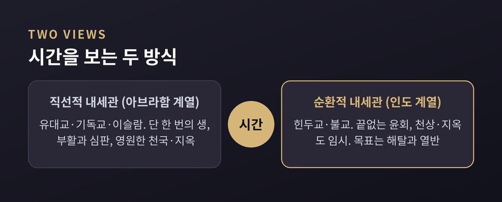
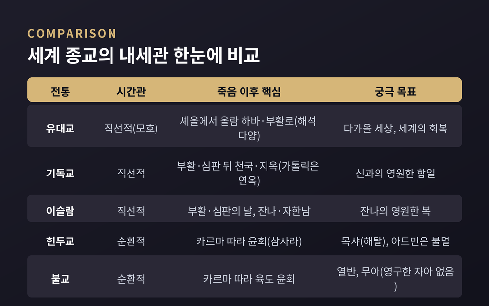
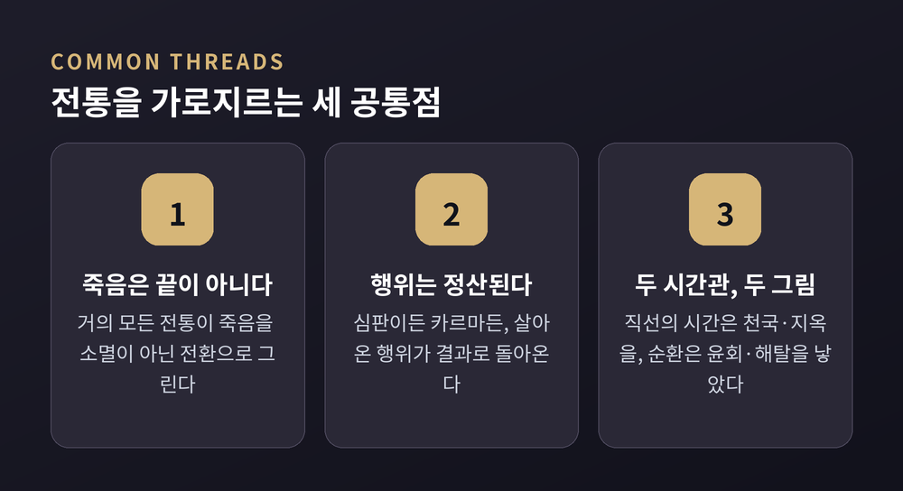

천국·윤회·열반, 죽음 너머를 그린 믿음들
세계 종교의 내세관을 한자리에 모아 비교해 보겠습니다. 기독교의 천국, 힌두교의 윤회, 불교의 열반처럼 죽음 너머를 그리는 그림은 전통마다 사뭇 다릅니다. 미리 밝혀 둘 것이 있습니다. 이 글은 어떤 신앙을 권하거나 폄훼하려는 글이 아니라, 여러 전통이 죽음 이후를 어떻게 상상해 왔는지 공정하게 비교·소개하려는 글입니다.
먼저 결론부터 짧게 정리합니다. 세계 종교의 내세관은 크게 두 갈래로 갈립니다. 시간을 한 방향의 화살로 보는 직선적 전통(유대교·기독교·이슬람)과, 생성과 소멸을 반복하는 큰 순환으로 보는 순환적 전통(힌두교·불교)입니다. 앞쪽은 단 한 번의 생과 최후의 심판, 영원한 천국·지옥을 말합니다. 뒤쪽은 여러 번의 생과 윤회, 그리고 그 순환에서 벗어나는 해탈을 말합니다.
내세관을 이해하는 가장 편한 틀은 "시간을 어떻게 보느냐"입니다.
직선적 내세관에서 시간은 한 방향으로 흐릅니다. 세상은 한 번 창조되고 한 번 끝납니다. 사람은 단 한 번의 생을 살고, 죽음 뒤에는 부활과 최후의 심판이 있습니다. 그 결과로 천국이나 지옥 같은 영원한 상태가 주어집니다. 목표는 신 앞에서 개별 자아가 보존되고 완성되는 것입니다.
순환적 내세관에서 시간은 큰 고리입니다. 존재는 여러 번 다시 태어납니다. 상과 벌은 마지막 한 번이 아니라 수많은 생을 거치며 나뉩니다. 천상이나 지옥조차 영원하지 않은 임시 거처일 뿐입니다. 궁극의 목표는 이 순환 자체에서 벗어나는 것입니다.
다만 이 이분법은 어디까지나 이해를 돕는 큰 틀입니다. 모든 전통이 여기에 딱 들어맞지는 않습니다. 유대교는 환생 관념을 일부 받아들이기도 하고, 직선적 전통 안에도 여러 해석이 함께 있습니다. 단순화의 위험을 의식하며 읽으시길 권합니다.

먼저 유대교입니다. 유대교는 사후세계에 대해 유난히 모호하기로 유명합니다. 영혼의 불멸, 다가올 세상(올람 하바), 죽은 자의 부활이 전통 안에 모두 등장하지만, 그것들이 정확히 무엇이고 어떻게 이어지는지는 늘 흐릿했습니다. 유대교는 지금 여기의 삶에 일차적으로 초점을 맞추며, 내세에 관한 교리가 많지 않아 개인의 견해에 큰 여지를 남깁니다.
토라는 이 생 이후 "내려가는" 장소처럼 보이는 셰올을 말합니다. 초기 셰올은 선악 구별 없이 모든 죽은 자가 가는 어둑한 곳에 가깝습니다. 죽음 이후의 영적 삶이라는 관념이 의미 있게 발전한 것은 바리새파(기원전 100년경)에 이르러서입니다. 그래서 정통파 유대인조차 의인의 영혼이 천국 비슷한 곳에 간다고도, 여러 생을 거쳐 환생한다고도, 메시아가 와서 부활할 때까지 기다린다고도 믿을 수 있습니다.
다음은 기독교입니다. 대다수 기독교인은 신과 사랑하는 이들과 영원히 함께하는 천국을 믿습니다. 불신자와 죄인이 벌받는 지옥을 믿는 이도 많지만, 지옥이 영원한지, 그 형벌이 영적인지 육체적인지에 대해서는 견해가 갈립니다. 심판과 부활은 기독교 전반의 핵심입니다.
교파별로 강조점이 다릅니다. 가톨릭은 천국·지옥에 더해 연옥을 믿습니다. 연옥은 천국에 들기 전 거치는 정화의 상태이며, 심판을 하나의 과정으로 봅니다. 개신교는 일반적으로 연옥을 인정하지 않고, 죽은 직후의 즉각적 이행과 '오직 믿음에 의한 구원'을 강조합니다. 정교회는 신화(神化)와 지복직관에, 성공회·감리교는 양쪽 요소의 절충에 무게를 둡니다.
기독교 안에서도 지옥의 성격을 두고 입장이 갈립니다. 악인이 영원히 의식을 가진 채 형벌받는다는 전통주의, 저주받은 자가 완전히 소멸한다는 소멸론, 결국 모두가 구원받는다는 보편구원론이 함께 있습니다. 어느 하나가 보편적 정설이라고 단정하기는 어렵습니다.
이슬람으로 넘어갑니다. 이슬람에서 내세를 뜻하는 말은 아키라입니다. 죽음이 끝이 아니라 일시적 세계에서 영원한 세계로의 이전이라는 믿음은 무슬림의 여섯 가지 핵심 신앙 중 하나입니다. 심판의 날에 죽은 자들이 부활하고, 신은 각자의 행위를 심판합니다. 선행이 무거운 자는 천국 잔나로, 악행이 무거운 자는 지옥 자한남으로 간다고 믿어집니다. 잔나와 자한남은 흔히 일곱 단계로 여겨지며, 그 복과 고통은 영적이면서 동시에 육체적이라고 봅니다.

힌두교는 삼사라, 곧 윤회를 말합니다. 영혼이 겪는 탄생-죽음-재탄생의 끊임없는 순환입니다. 죽은 뒤 영혼은 또 다른 몸으로 다시 태어납니다. 동물일 수도, 인간일 수도, 신적 존재일 수도 있습니다.
이 여정의 주체는 아트만, 곧 영원한 자아입니다. 몸은 죽지만 아트만은 죽지 않습니다. 아트만은 영원하고 파괴되지 않으며, 그 자체는 변하지도 환생하지도 않습니다. 변하고 태어나고 죽는 것은 몸과 인격입니다. 다음 생의 조건을 결정하는 것은 카르마, 곧 업입니다. 모든 행위에는 선악의 결과가 따르고, 그 결과가 다음 생의 형태와 영역까지 좌우합니다. 그리고 이 순환에서 벗어나는 것이 목샤, 곧 해탈입니다. 윤회 속 천상·지상의 삶은 일시적이고, 오직 목샤만이 영원하다고 봅니다.
불교도 윤회와 업을 공유합니다. 다만 결정적인 차이가 하나 있습니다. 윤회는 여섯 영역, 곧 육도에서 일어납니다. 천상·아수라·인간의 세 좋은 영역과 축생·아귀·지옥의 세 나쁜 영역입니다. 천상은 가장 쾌락적이어서 천신들이 부와 장수를 누립니다. 그러나 천상조차 영원하지 않습니다. 카르마가 다하면 다시 떨어집니다.
불교의 궁극 목표는 어느 한 영역에 다시 나는 것이 아닙니다. 윤회의 바퀴 자체에서 완전히 벗어나는 열반입니다. 열반은 모든 고통이 소멸하고, 실재가 무상하고 무아임을 꿰뚫는 참된 통찰을 얻은 상태입니다.
여기서 힌두교와 불교가 갈립니다. 힌두교는 윤회를 거치며 이어지는 영원한 자아, 곧 아트만이 있다고 봅니다. 불교는 그런 영구한 영혼은 없다고 봅니다. 이것이 무아(아나타)입니다. 불교는 윤회 자체는 받아들이되, 그것을 하나로 꿰는 변치 않는 영혼은 부정합니다. 한 생에서 다음 생으로 넘어가는 것은 영혼의 이주가 아니라, 카르마가 빚어낸 의식의 흐름이라는 인과적 연속이라고 설명합니다. 한편 대승의 정토 신앙처럼, 아미타불의 정토에 다시 나기를 강조하는 흐름도 있어 전통 안의 강조점은 다양합니다.
직선적 심판 내세관의 고대적 원형으로 자주 거론되는 두 전통이 있습니다.
고대 이집트는 죽음을 끝이 아니라 저승(두아트)을 통과하는 여정의 시작으로 보았습니다. 그 핵심 의식이 '심장의 무게 달기'입니다. 신 아누비스가 망자의 심장을 진리의 여신 마아트의 깃털과 저울에 답니다. 심장이 깃털보다 가볍거나 같으면 영혼은 평화로운 낙원 갈대밭에 들고, 죄로 무거우면 괴물 아미트가 심장을 삼킵니다. 개인의 도덕적 행위에 따른 사후 심판이라는 관념을 매우 일찍, 정교하게 발전시킨 사례입니다.
조로아스터교는 모든 영혼이 건너야 하는 친바트 다리, 곧 '심판자의 다리'를 말합니다. 다리의 모습은 그 영혼의 의로움에 따라 달라집니다. 의로운 자에게는 넓은 다리가, 사악한 자에게는 좁은 다리가 되어 사악한 자는 다리에서 떨어집니다. 선악이 같은 영혼은 하미스타칸이라는 중간 상태에 머뭅니다. 흔히 '연옥의 이른 형태'로 불리는 곳입니다.
한 가지 짚어 둘 점이 있습니다. 조로아스터교의 천국·지옥·최후 심판 관념이 후대 아브라함 종교에 영향을 주었다는 견해는 비교종교에서 널리 논의됩니다. 다만 영향의 방향과 시기, 정도에 대해 학계 견해가 완전히 일치하지는 않습니다. 그래서 단정하기보다 "그렇게 논의된다" 정도로 신중히 받아들이는 편이 맞습니다.

정리하면 이렇습니다. 세계 종교의 내세관은 서로 다른 답을 내놓지만, 한 가지 물음만은 똑같이 붙들고 있습니다. 죽음 너머에 무엇이 있는가, 그리고 어떻게 살아야 하는가입니다.
— 답은 전통마다 갈리지만, 죽음을 정면으로 응시하며 삶의 의미를 묻는 자세만큼은 어디서나 다르지 않았습니다.
서로 다른 그림을 우열로 줄 세우는 대신 나란히 펼쳐 놓고 본다면, 인류가 죽음이라는 같은 물음 앞에서 얼마나 다채롭게 답해 왔는지 그 폭을 가늠해 보실 수 있을 것입니다.